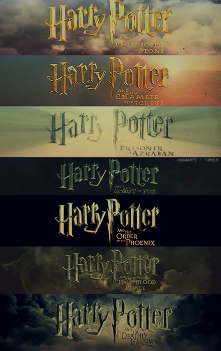
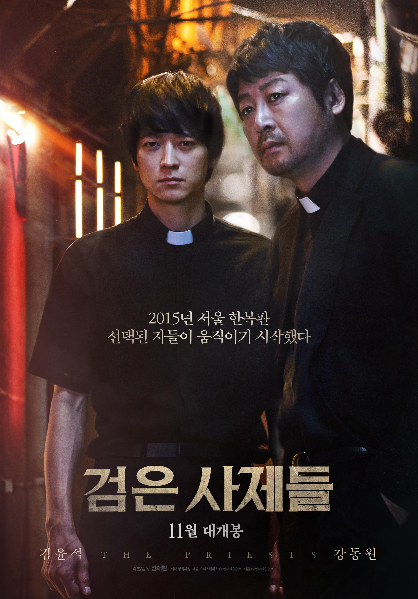

Watching Movies
|  | Tittle | Harry Potter |
| 좋아하는 등장인물 | Hermione Jean Grange Luna Lovegood | |
 | Tittle | 부산행 |
| 한줄평 | 무서운 걸 싫어하는데 공포감 속에서도 흥미진진하게 볼 수 있어 여운이 크게 남아 몇번이고 다시 보게 됐던 영화 | |
 | Tittle | 반창꼬 |
| 한줄평 | 웃기고 감동적이고 한효주 너무 예쁘고 다했다. | |
|  | Tittle | 검은사제들 |
| 한줄평 | 강동원의 연기가 너무 몰입이 잘되서 푹 빠져서 봤다. 이전까지 강동원이 잘생겼다고 생각하지도, 좋아하지도 않았는데 강동원이라는 배우에 빠지게 된 영화 |